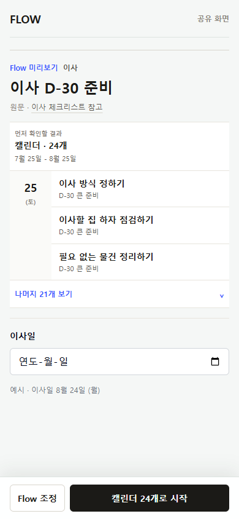
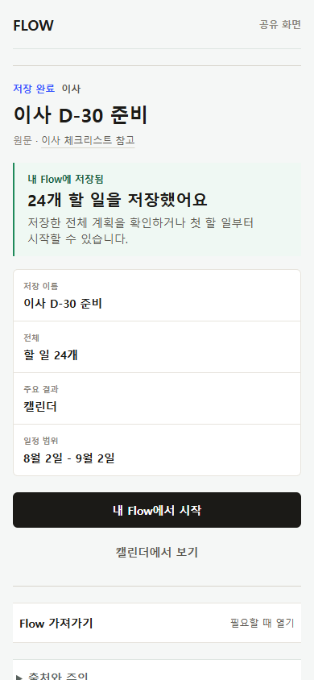
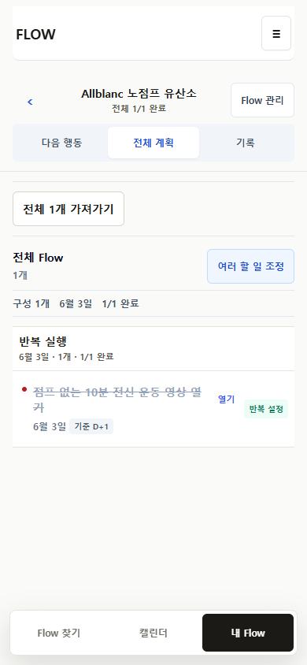
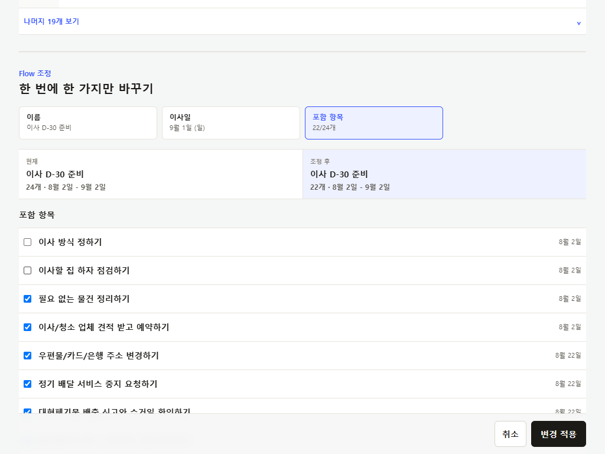
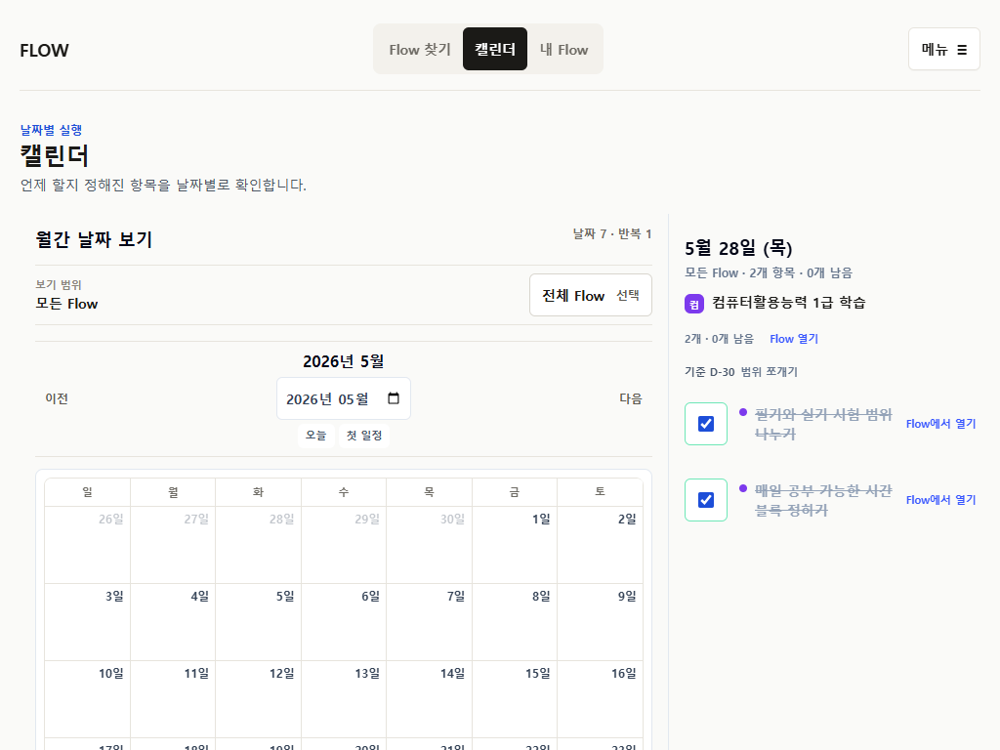

데이터 소유권
source, personal overlay, execution run, occurrence, export identity를 분리한다.
P35 OWNER FEEDBACK INDEPENDENT REVIEW
P35 Preview의 3탭, result-first, focused My Flow 후보안을 승인하기 전에 저장 전 편집, 저장/외부 가져가기, 날짜 묶음, 완료 복구, 다음 행동과 기록의 역할을 다시 검토한다.
PRODUCT GOAL
원문이나 메모를 실제로 쓸 수 있는 결과로 바꾸고, 필요한 최소 조정을 거쳐 FlowMe 또는 기존 캘린더·할 일·표·메모 도구로 이어 주는 것이 핵심이다.
원문·메모 → 전체 결과 → 최소 개인화 → FlowMe 저장 또는 외부 가져가기 → 실행·완료·다시 열기 → 수정·기록·재사용
source, personal overlay, execution run, occurrence, export identity를 분리한다.
무엇이 몇 개 만들어지는지 먼저 보여 주고 필요한 입력만 점진적으로 받는다.
FlowMe 저장을 강제하지 않고 자연스러운 artifact와 destination을 예측하게 한다.
CURRENT P35 CANDIDATE
Flow 찾기, 캘린더, 내 Flow. 별도 Home은 entry router로 축소했다.
primary artifact와 실제 결과 개수를 설명과 설정보다 먼저 보여 준다.
이름, 기준일, 포함 항목, 반복 중 한 종류만 연다.
저장 목록과 선택한 한 Flow의 workspace를 분리했다.
날짜 있는 항목의 조회, 완료, Flow 열기에 집중한다.
whole, selected, current 범위와 개수를 형식보다 먼저 정한다.
OWNER FEEDBACK
포함 여부만이 아니라 제목, 상세, 개별 날짜를 저장 전 contextual detail에서 바꿀 수 있어야 하는가?
오늘 또는 첫 실행보다 저장한 전체 결과 검증을 먼저 해야 하는가?
날짜형 Flow는 next row 한 건이 아니라 가장 가까운 날짜의 미완료 항목을 묶어야 하는가?
자연스러운 결과를 먼저 확인한 뒤 FlowMe 또는 외부 destination을 선택해야 하는가?
대상이 현재 문맥에서 사라지거나 이동한 경우에만 즉시 되돌리기를 강조할 것인가?
다가오는 일정, 남은 할 일, 이번 회차, 현재 단원으로 구체화하거나 탭을 없앨 것인가?
진행 history, 단계 메모, 회고, 다시 쓰기를 분리하고 기록 탭을 축소할 것인가?
STRUCTURE ALTERNATIVES
Public result → 최소 조정 → FlowMe 저장 → receipt → 다음 행동/전체 계획/기록 → 가져가기
Public result → 구조·일정 전체 편집 → 저장 또는 export. 자유도는 높지만 planner 복잡도가 커진다.
Public result → contextual edit → artifact·개수 → FlowMe 또는 외부 destination → shape-specific workspace
HEURISTIC SIMULATION
24개 날짜형 일정, 기준일, 같은 날짜 묶음, Calendar export
날짜 없는 Checklist/Todo, 선택적 날짜, 완료·다시 열기
series, 이번 occurrence, 완료 history, ICS
8개 진도, 현재 위치, 단계 메모, selected export
분할, 저장 전 수정, 구조 편집, Memo/Checklist export
| Session | 검토 흐름 | 핵심 질문 |
|---|---|---|
| A | 발견 → 전체 결과 → 조정 → 저장/외부 가져가기 | 무엇이 만들어지고 어디로 가는가? |
| B | Receipt → 전체 저장 결과 → 다음 실행 → 완료·다시 열기 | 저장한 전체와 지금 할 일을 함께 이해하는가? |
| C | 기록 → 메모·회고 → 가져가기 → 다시 쓰기 | history와 개인 기록, 재사용이 구분되는가? |
CURRENT SCREEN EVIDENCE
아래 이미지는 P35 자동 capture다. 실제 사용자 관찰이 아니며 Preview를 직접 조작해 상태 전이를 확인해야 한다.






REQUIRED RESPONSE